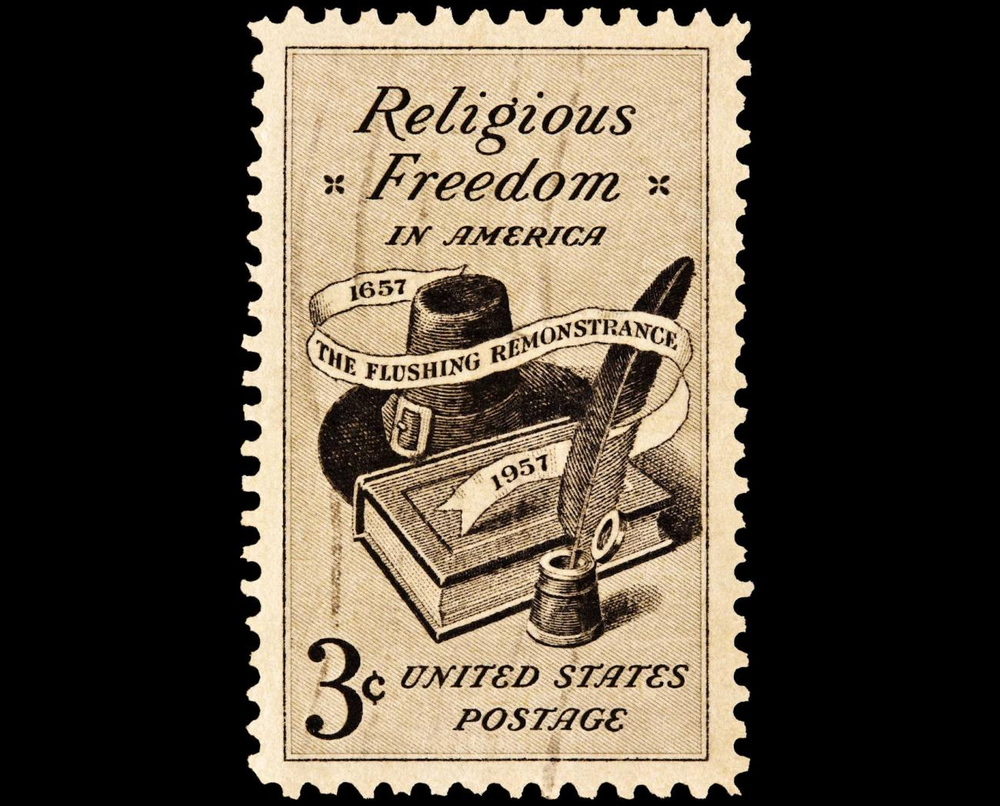

Essays:
Religious Freedom
When it comes to religion, I have to confess to being a bit of a mongrel.
My mother was a Methodist. My father was a nudist. And I once called myself an immortalist.
These days I choose not to align myself with any particular religious group.
I respect others who do make such choices, though. If you call yourself a Christian, then I respect you for that. I was raised as a Christian, and I know there are many beautiful elements of Christianity. Christmas is my favorite holiday, and many of the reasons I love it have to do with Christian stories and beliefs. I love The Chronicles of Narnia; I’ve also read Mere Christianity by the same author, and I’m aware that C.S. Lewis chose to weave many Christian elements into the “children’s” books that have become such perennial favorites.
I don’t personally know as much about Islam, but if you call yourself a Muslim, then I respect you for that as well. I know that there are many common elements to most modern religions, and that they share many valuable moral precepts. I will assume, unless you indicate otherwise, that your religious beliefs are motivated by a belief in a higher power that calls to all of us to be our better selves, and to act, not just as isolated individuals, but as part of a larger whole. I’m good with that. I feel that too.
If you tell me, however, that you believe every statement in some special religious text to be completely true, and that you believe it all without question, and without any need for independent verification, then I will probably start to look at you a little funny, and will be reminded of H.L. Mencken’s quotation:
We must respect the other fellow’s religion, but only in the sense and to the extent that we respect his theory that his wife is beautiful and his children smart.
If you go further, and begin to demonize a certain segment of society based on attributes or behaviors that do no harm – whether it is blacks, women, Jews or gays – and you defend those statements based only on some words you find in your religious text, then I will begin to back away from you, and be reminded of Ken Wilber’s words:
An integral approach acknowledges that all views have a degree of truth, but some views are more true than others, more evolved, more developed, more adequate. And so let’s get that part out of the way right now: homophobia in any form, as far as I can tell, stems from a lower level of human development — but it is a level, it exists, and one has to make room in one’s awareness for those lower levels as well, just as one has to include third grade in any school curriculum. Just don’t, you know, put those people in charge of anything important.
Now if you happen to be using your religious text to demonize those who have done you no harm, and you are already in a position of some authority, then I will begin to think that you are a dangerous lunatic. In this case, I will feel compelled to let you know, and let others around us know, in no uncertain terms, that I disagree with you, and I will be reminded of these words attributed to pastor Martin Niemöller:
First they came for the communists, and I didn’t speak out because I wasn’t a communist.
Then they came for the trade unionists, and I didn’t speak out because I wasn’t a trade unionist.
Then they came for the Jews, and I didn’t speak out because I wasn’t a Jew.
Then they came for me and there was no one left to speak out for me.
So if you ask me whether I believe in religious freedom, I will tell you yes, because I believe that in our diverse expressions of religious feeling we can find threads of our common humanity that help to unite us and make us better people: richer, warmer, more alive.
And if you ask me whether I believe in free speech, then I will say yes, absolutely. But I will also tell you this:
The purpose of free speech is not to give equal time to every citizen to speak whatever idiocy pops into their heads, while the rest of us sit around and nod our heads in pretended agreement – the purpose of free speech is to encourage a vigorous public discourse that will make all of us better informed and wiser citizens. Sometimes we must suffer the former in order to achieve the latter, but we should never confuse the two.
August 4, 2012